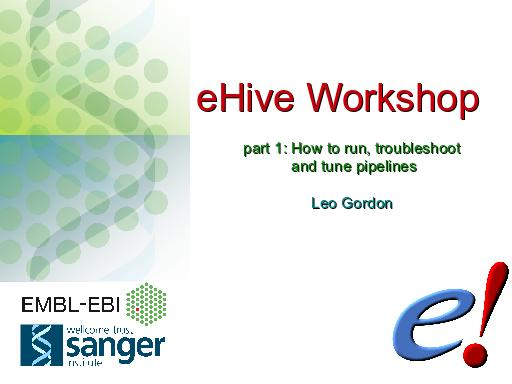
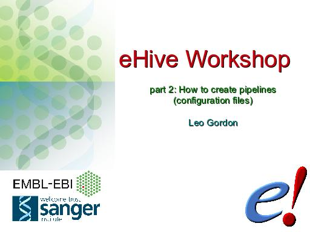
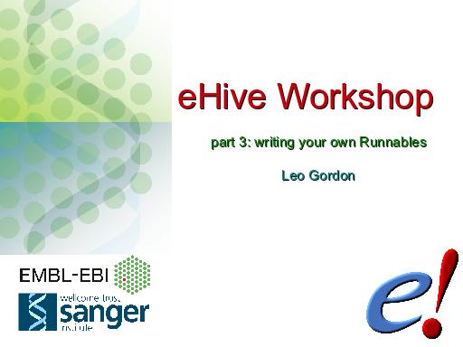

We held a workshop on eHive in September 2013 at the Genome Campus, in Hinxton. It was made of three sessions (roughly half-a-day each):
Slides are available in the original OpenDocument format, and exported to PDF.
|  |
 |
 |
eHive was originally conceived and used within EnsEMBL Compara group for running Comparative Genomics pipelines, but since then it has been separated into a separate software tool and is used in many projects both in Genome Campus, Cambridge and outside. There is eHive users' mailing list for questions, suggestions, discussions and announcements.